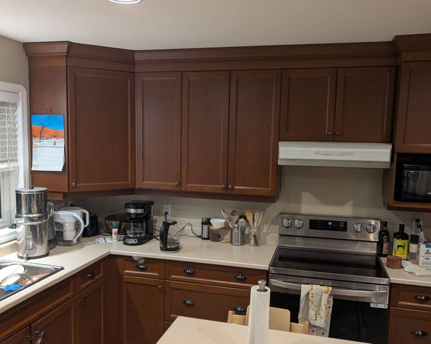
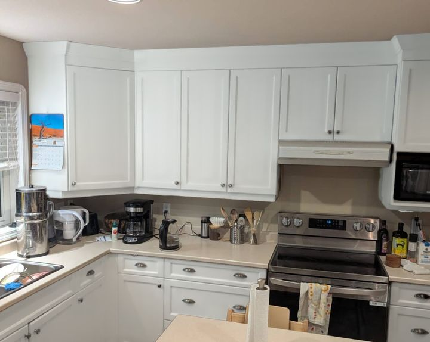
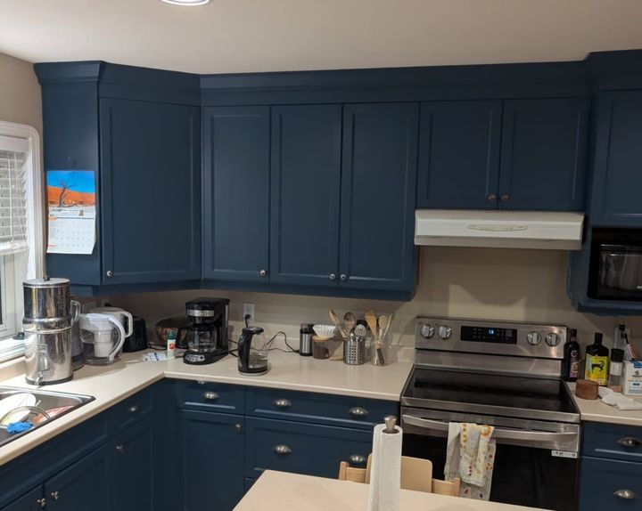

Cabinet colour visualizer
Upload a photo of your kitchen and see your own cabinets in any Sherwin-Williams colour in about 20 seconds. Free.
Cabinets only. Walls, trim, counters and everything else stay as they are in your photo.
Photos you upload are kept for 90 days to help us improve this tool.
Examples
A real kitchen photo run through this tool. Only the cabinets change; your counters, walls and floors stay as they are.



Our process
Family-run in Greater Victoria, with thousands of homes painted.
FAQ
Yes. Upload a photo, try colours, and download your favourite. No cost and no obligation.
Very close, but screens vary. Before you decide, check a physical Sherwin-Williams sample in your kitchen.
So we can send your colours and help with a quote if you want one. We'll never sell your information.
Yes, interiors and exteriors across Greater Victoria. This tool just shows cabinets.
It takes about 20 seconds. Or call us at (250) 813-2530.